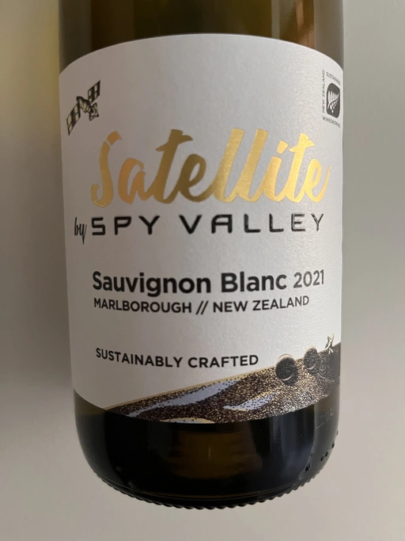

- Type
- White Still, Dry
- Producer
- Spy Valley
- Vintage
- 2021
- Location
- New Zealand, Marlborough
- Grapes
- Sauvignon Blanc
- Alcohol
- 13
- Sugar
- NA
- Price
- 315 UAH
- Cellar
- N/A
Ratings
2022-06-10 - 6.50
The first thing I noticed is the label change. It’s not critical, but I liked previous one more. Previously it was a baseline Sauvignon Blanc with a label of a good wine, now it’s a baseline Sauvignon Blanc with… this label. As you can see, I am talking about label instead of wine itself, so it could be a signal. But in reality, it’s totally fine, tropical bomb with matching palate, typical black currant leaves and good acidity. Surprisingly good price.